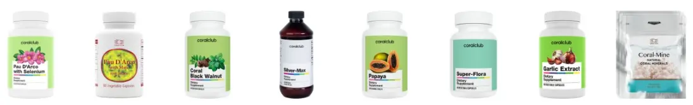

Для чего нужно очищение организма от паразитов, спросите вы. Я здоровый человек... Хотим вас проинформировать, что каждый второй житель планеты заражен паразитами, грибами, вирусами или бактериями.
По данным Всемирной Организации Здравоохранения в мировом масштабе только от гельминтозов страдают примерно 2 млрд человек, в том числе 4 млн детей в Европейском регионе. Гельминтозы, передающиеся через почву (геогельминтозы), входят в число наиболее распространенных паразитарных болезней человека. Паразиты живут долго и активно размножаются за счет своего хозяина. Хуже всего - они вызывают заболевания. Некоторые из них поддаются лечению, а некоторые нет.
Паразитами можно заразиться через пищу, грязную воду, грязные руки, половые контакты. Это может произойти в путешествиях и на садовом участке.
Наша задача помочь вам разобраться и взять за правило проводить очистку от паразитов с помощью антипаразитарной программы 2 раза в год и после каждой поездки в экзотическую страну.
Эксперты Coral Club создали программу для комплексной защиты от паразитов.
в антипаразитарную программу входят пробиотики, витамины и минералы
Они помогают:
- Вывести грибы и паразитов.
- Очистить организм от токсинов.
- Предотвратить аллергические реакции.
- Восстановить здоровую микрофлору кишечника.
- Повысить иммунитет.
как принимать антипаразитарную программу
КУРС РАССЧИТАН НА ОДНОГО ЧЕЛОВЕКА / ПРИНИМАЕТСЯ 21 ДЕНЬ
- Кора муравьиного дерева с селеном или Кора муравьиного дерева с мате, народное средство при герпесе, инфекционных заболеваниях мочеполовой системы, бронхитах и заболеваниях легких, при простудных заболеваниях ОРЗ и ОРВИ, противогрибковое, противовирусное и как иммуномодулятор. Принимаете по 1 капсуле 3 раза в день во время еды.
- Корал черный орех, противоглистное, нормализует работу ЖКТ, действует как легкое слабительное, является доказанным противоопухолевым средством, не токсичен, что позволяет использовать его онкологическим больным, проходящим химиотерапию. Принимаете по 2 таблетки 2 раза в день во время еды.
- Сильвер-Макс, противовоспалительное, противобактериальное, противогрибковое средство. Принимаете по 1 чайной ложке 2 раза в день за 30 минут до еды.
- Папайя, растительный фермент, который помогает процессу дегельминтизации, обладает противомикробным свойством. Папаин стимулирует переваривание мертвых клеток, является безопасным для здоровых тканей. Принимаете по 1 таблетке 3 раза в день после еды медленно разжевывая.
- Супер-Флора, улучшает пищеварение, восстанавливает микрофлору кишечника. Принимать по 1 капсуле 2 раза до еды за 30 минут.
- Экстракт чеснока, противопаразитарное, противовирусное, иммуномодулирующее средство. Принимаете по 1 капсуле 2 раза в день во время еды.
- Корал-Майн, имеет упорядоченную структуру, обогащает полезными минералами моря, один пакетик саше на 1,5 литра воды, через 5-7 минут вода готова к употреблению. Принимаете за полчаса до еды и через 1,5 часа после еды.

во время прохождения программы исключить
- Жирную еду животного происхождения, консервы, кондитерские изделия, пироги, сладкое, кофе, соль и сахар.
- Запрещено есть все, что вызывает газообразование, а именно виноград, яблоки, груши, картофель, белокочанную капусту,бобовые, бананы.
Противопаразитарных программ в компании Coral Club несколько (Парашилд или Парашилд Плюс). Все зависит от задач, которые вы хотите решить для улучшения самочувствия. Свяжитесь с консультантом на сайте и получите подробную консультацию по подбору индивидуальной программы.
почему coral club
Компания Coral Club ведёт свою деятельность с 1999 года и производит компоненты здорового питания, косметические средства, безопасные чистящие и моющие средства для дома. Ассортимент Coral Club включает в себя более 200 продуктов.
Сегодня компания Coral Club регулярно поставляет продукцию в 190 стран мира. В 38 странах открыты представительства компании. Общее количество точек продаж насчитывает 350 офисов.
Продукты компании Coral Club необходимы для профилактики и комплексной терапии. Они состоят из натуральных ингредиентов и не имеют побочных эффектов. Предназначены для восполнения дефицита определенных витаминов, минералов, аминокислот в продуктах питания, профилактики и поддержки физиологической активности органов и систем, адаптивности организма к факторам окружающей среды.
Лекарства же состоят из синтетических веществ и необходимы для лечения заболеваний. Они могут включать в себя сильнодействующие компоненты, которые не содержатся в продуктах питания и потребность в которых не обязательно является физиологической. Лекарственные препараты необходимо приобретать исключительно в аптеках и по рецепту врача.
Продукты входящие в программу очищают организм от паразитов, грибков и бактерий, укрепляют иммунитет, также являются источниками дополнительного клеточного питания и энергии
профилактика заболеваний
Основными признаками и первыми симптомами наличия в организме паразитов являются усталость, слабость, астма, кашель, сыпь на кожном покрове, тошнота, рвота, частые запоры, диарея, болевые ощущения в области живота, скрип зубами, храп, в районе анального отверстия часто зудит.
С помощью предложенной выше программы можно предупредить развитие следующих заболеваний:
- Анемию или по другому малокровие. Вызвано снижением количества эритроцитов и гемоглобина в крови.
- Аллергию. Паразиты могут вызывать нарушения функций желудочно-кишечного тракта, что является причиной аллергических реакций.
- Проблемы с кожей. Кишечные паразиты могут вызывать крапивницу, сыпь, экзему и другие кожные реакции.
- Бруксизм — сжатие зубов и трение ими часто сопровождает многие паразитические инфекции.
- Артрит. Боль и воспаление суставов и мышц являются результатом травмирования тканей некоторыми паразитами либо иммунной реакцией на их присутствие.